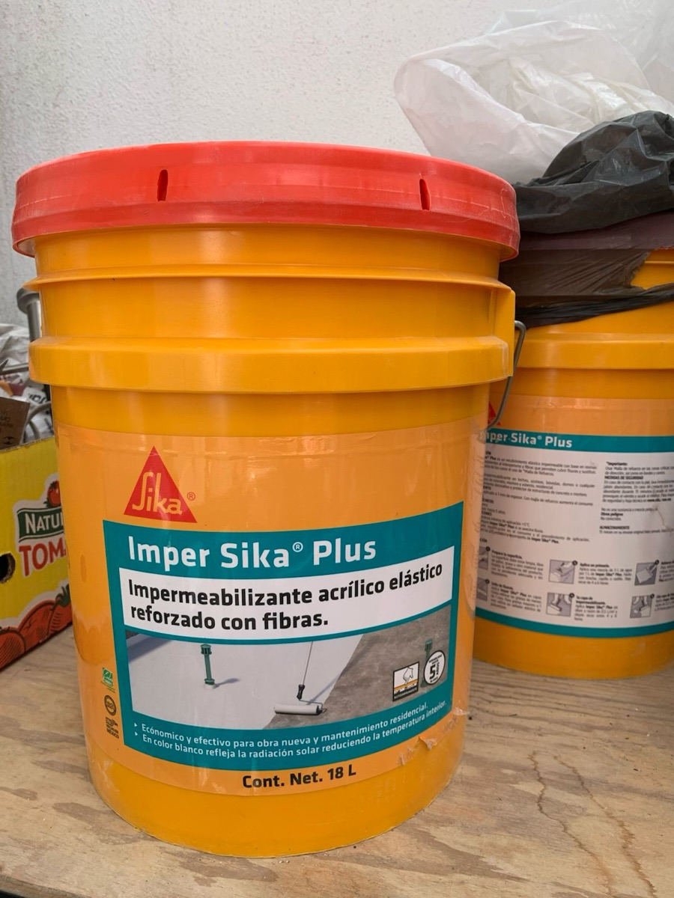
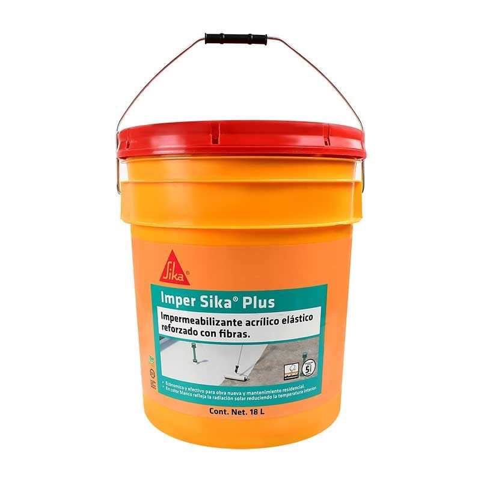

Entre Vecinos · Venta de garage
LOS NARANJOS
Impermeabilizante ImperSika® Plus 5 años
Acrílico elastomérico, blanco y reforzado con fibras. Comprado en diciembre de 2025.
Casa 33A · calle de arriba

Cubeta selladaNueva, sello de fábrica intacto$800
Cubeta con sello rotoTiene roto el sello de la tapa$600
Las dos cubetas$1,200
También puedes pasar directo a la casa 33A durante la venta.
Para qué sirve
- Impermeabilizar techos, azoteas, bóvedas y domos de concreto, mortero, asbesto o lámina galvanizada.
- Sirve en obra nueva y para dar mantenimiento sobre un impermeabilizante anterior.
- El color blanco refleja el sol y baja la temperatura dentro de la casa.
- Las fibras evitan usar malla en la mayoría de los casos. Solo hace falta en zonas críticas: chaflanes, bajantes, juntas y cambios de dirección.
Especificaciones
- Durabilidad
- Hasta 5 años
- Base
- Acrílica, se aplica en frío
- Color
- Blanco
- Presentación
- Cubeta de 18 L
- Rendimiento
- 1.0 a 1.5 L/m² en total (2 capas), unos 12 a 18 m² por cubeta
- Seco al tacto
- ~4 h a 20 °C
- Resiste lluvia
- ~72 h después de aplicar
- Secado total
- ~6 días
- Herramienta
- Brocha, rodillo o cepillo
Antes de impermeabilizar
Sika recomienda sellar las grietas con un sellador de poliuretano de la línea Sikaflex antes de aplicar. En la casa 33A también hay Sikaflex-416.
Cómo se aplica
- Limpia la superficie: sin polvo, partes sueltas, grasa ni humedad.
- Sella las grietas y juntas de más de 1 mm con un sellador de poliuretano y deja que cure.
- Primario: diluye 1 parte de impermeabilizante en 3 de agua y aplica una mano (~0.25 L/m²).
- Mezcla el producto 1 minuto y aplica la primera capa cuando el primario esté seco (~4 h a 20 °C).
- Espera ~24 h a 20 °C y aplica la segunda capa en sentido cruzado.
Ten en cuenta
- No se aplica con lluvia, humedad relativa mayor a 80 % o menos de 5 °C.
- No es para techos donde se encharca el agua ni para áreas con tráfico de personas.
- Se conserva 15 meses desde su fecha de fabricación, guardado cerrado y a la sombra.
Datos de la hoja técnica oficial de Sika México, ImperSika® PLUS (versión 01.02, octubre de 2022): mex.sika.com. Los consumos son teóricos y cambian con la porosidad y el estado de la superficie.